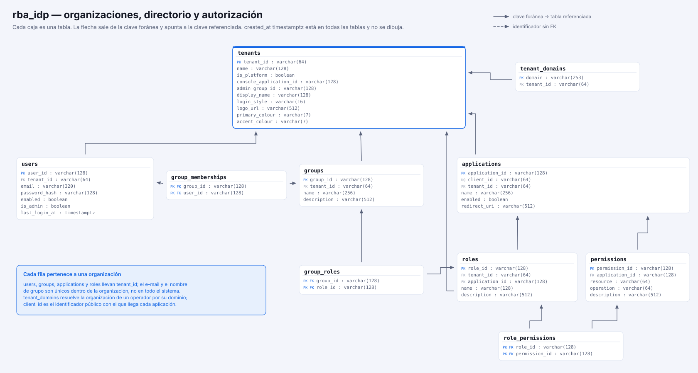
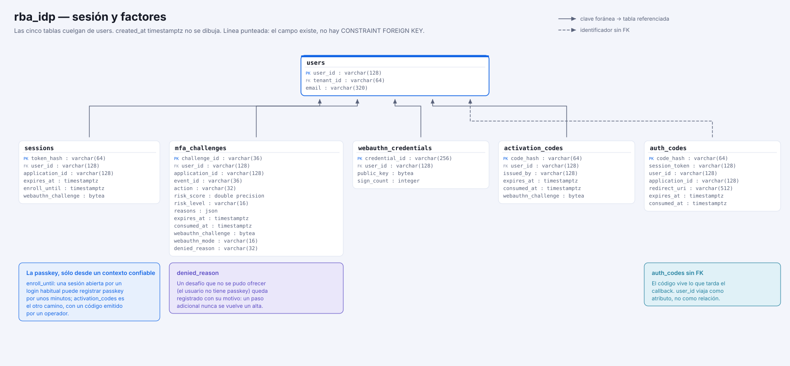
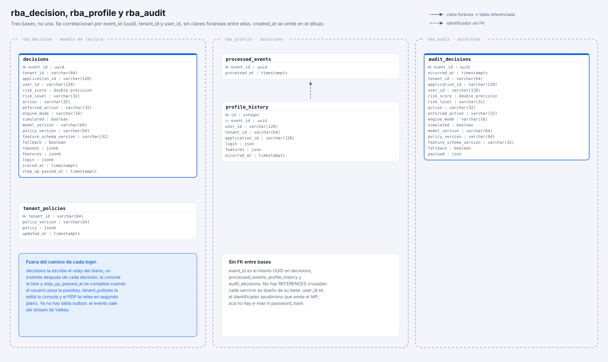
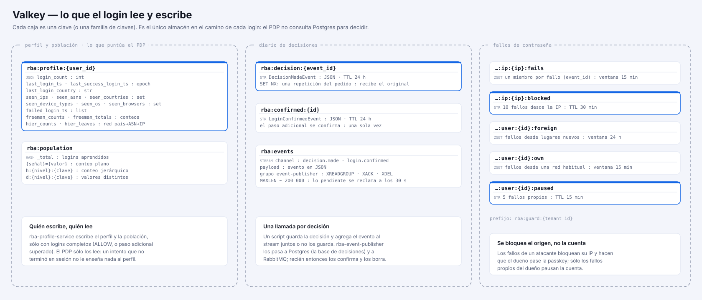

Generados desde design/diagrams/. Volver a correr python3 build.py después de cualquier cambio en el sistema: están armados por script, no a mano, así que mantenerlos fieles cuesta una corrida. Clic en una figura para abrir el original vectorial. El .puml de cada una es el mismo diagrama en UML textual, por si hace falta entregar el fuente.
design/diagrams/
python3 build.py
.puml
Secuencia. Browser, banco, IdP y PDP, con los tres desenlaces y el camino degradado.
SVG · PNG @2x · PlantUML
Secuencia. Cómo un código de un solo uso se vuelve sesión, y cómo se resuelven los permisos en cada pedido.
Componentes, con los íconos y grupos de AWS. Qué corre en AWS y con qué habla.
Tablas. Organizaciones, usuarios, grupos, roles, permisos y aplicaciones.

Tablas. Sesiones, desafíos, passkeys, códigos de activación y de callback.

Tablas. Las tres bases que se llenan detrás de cada decisión.

Claves. Perfil, población, diario de decisiones y contadores de fallos: lo que el login lee y escribe.
